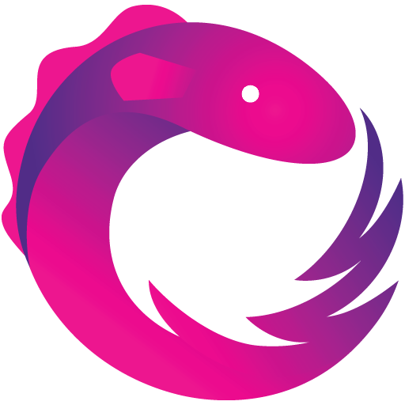
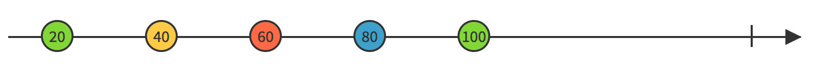
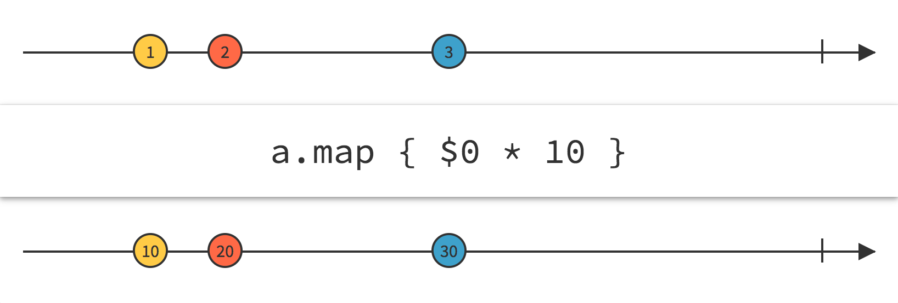
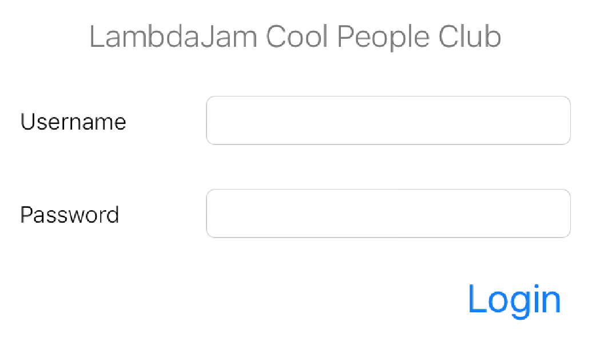
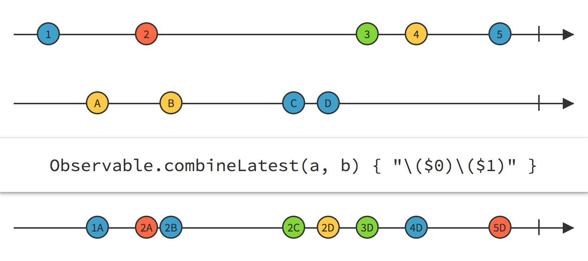
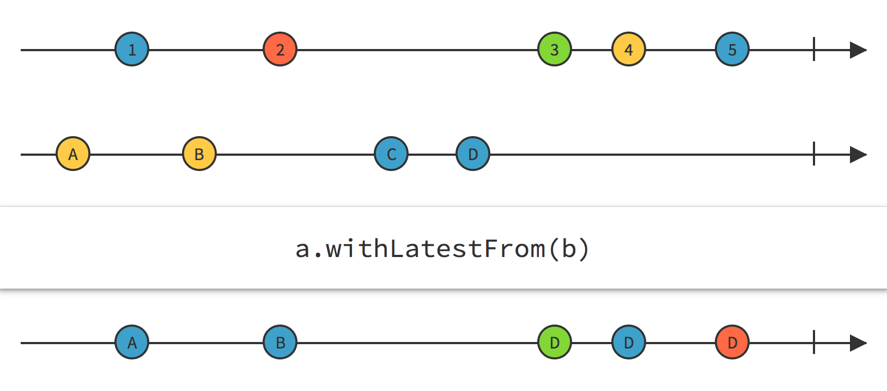
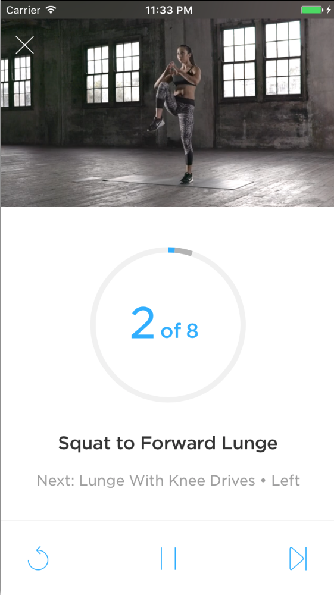
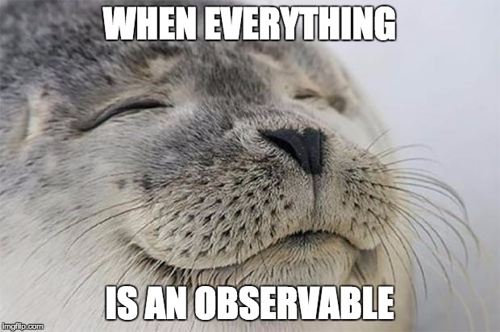

Observing Everything
Completely Reactive Apps in the Real World with RxSwift
Zova - a fitness app
Initially objective-c
Standard iOS app - standard object orientated design
@property NSMutableArray *sections;
- (instancetype)init
{
self = [super init];
_sections = [NSMutableArray new];
for(int i = 0; i < 7; i++)
{
ZVCollectionViewNullSection *nullSection = [ZVCollectionViewNullSection new];
[_sections addObject:nullSection];
}
}
Standard iOS message passing and asynchrony solution:
There is none
NSNotificationCenter
Delegates
Callback closures
self.timeObserver = [avPlayer addPeriodicTimeObserverForInterval:CMTimeMake(1, 10)
queue:NULL usingBlock:^(CMTime time) {
NSTimeInterval timeInSeconds = CMTimeGetSeconds(time);
NSTimeInterval currentItemDuration = [weakSelf.player currentItemDuration];
[[NSNotificationCenter defaultCenter]
postNotificationName: kVKVideoPlayerDurationDidLoadNotification
object:weakSelf
userInfo:@{@"duration":[NSNumber numberWithDouble:currentItemDuration]}];
[weakSelf.delegate videoPlayer:weakSelf
didPlayFrame:weakSelf.track time:timeInSeconds lastTime:0];
}];
ReactiveX
An API for asynchronous programming with observable streams
The Observable
An asynchronous value stream
A basic observable could be:
- User tap events on a specific button
- A network request
- A database operation
- Scroll offset in a scroll view as a user swipes
- A timer
- Anything!
Subscriptions
button.rx.tap //This is an observable
.subscribe(onNext: { present(viewController: myAlert) }) //this is a side effect
Observable operators
In practice
Done!
loginButton.rx.tap
.withLatestFrom(
Observable.combineLatest(nameField.rx.text, passwordField.rx.text)
)
.flatMapLatest { userAPI.login(user: $0, password: $1) }
.map { $0.isSuccess ? "Success!" : "Failure" }
.bindTo(resultField.rx.text)
.disposed(by: disposables)
}
loginButton.rx.tap
.withLatestFrom(
Observable.combineLatest(nameField.rx.text, passwordField.rx.text)
)
.flatMapLatest { userAPI.login(user: $0, password: $1) }
.map { $0.isSuccess ? "Success!" : "Failure" }
.bindTo(resultField.rx.text)
.disposed(by: disposables)
combineLatest

loginButton.rx.tap
.withLatestFrom(
Observable.combineLatest(nameField.rx.text, passwordField.rx.text)
)
.flatMapLatest { userAPI.login(user: $0, password: $1) }
.map { $0.isSuccess ? "Success!" : "Failure" }
.bindTo(resultField.rx.text)
.disposed(by: disposables)
withLatestFrom

loginButton.rx.tap
.withLatestFrom(
Observable.combineLatest(nameField.rx.text, passwordField.rx.text)
)
.flatMapLatest { userAPI.login(user: $0, password: $1) }
.map { $0.isSuccess ? "Success!" : "Failure" }
.bindTo(resultField.rx.text)
.disposed(by: disposables)
flatMap/Latest

A functional reactive video player
Key-value observable
- currentItem
- isMuted
- volume
- status
Registered callbacks
- Reached time
- Periodic time
Broadcast notifications
- Reached end of item
- Failed to play
- Player skipped time
KVO -> Observable
extension Reactive where Base: AVPlayer {
public var currentItem: Observable<AVPlayerItem>{
return observe(AVPlayerItem.self, "currentItem")
}
}
NSNotification -> Observable
extension Reactive where Base: AVPlayer {
public var itemEnd: Observable<NSNotification> {
return Observable.merge(
notificationCenter.rx.notification(NSNotification.Name.AVPlayerItemDidPlayToEndTime),
notificationCenter.rx.notification(NSNotification.Name.AVPlayerItemFailedToPlayToEndTime)
)
}
}
Callback -> Observable
extension Reactive where Base: AVPlayer {
public func seekTime(scale: CMTime) -> Observable<Double> {
return Observable.create { observer in
let timeObserver = player.addPeriodicTimeObserver(forInterval: scale, queue: nil) {
observer.on(.next($0.seconds))
}
return Disposables.create {
player.removeTimeObserver(timeObserver)
}
}
}
}
Now everything is simple

class WorkoutPlayer {
public lazy var currentExerciseName: Observable<String> =
Observable.combineLatest(self.workout, self.currentItem) { workout, currentItem in
workout.exercises[currentItem.position].name
}
}
The old fashioned way
protocol WorkoutPlayerDelegate {
func exerciseNameChanged(name: String)
}
class WorkoutPlayer {
var workout: Workout {
didSet {
updateCurrentExercise()
}
}
var currentItem: WorkoutPlayerItem?
func setupObserving() {
let player = AVPlayer()
addObserver(self, forKeyPath: #keyPath(player.currentItem), options: [.old, .new], context: nil)
}
override func observeValue(forKeyPath keyPath: String?, of object: Any?, change: [NSKeyValueChangeKey : Any]?, context: UnsafeMutableRawPointer?) {
if keyPath == #keyPath(player.currentItem) {
currentItem = player.currentItem
updateCurrentExercise()
}
}
func updateCurrentExercise() {
let exercise = workout.exercises[currentItem.position]
delegate.exerciseNameChanged(name: exercise.name)
}
func unsetupObserving() {
removeObserver(self, forKeyPath: #keyPath(player.currentItem))
}
}